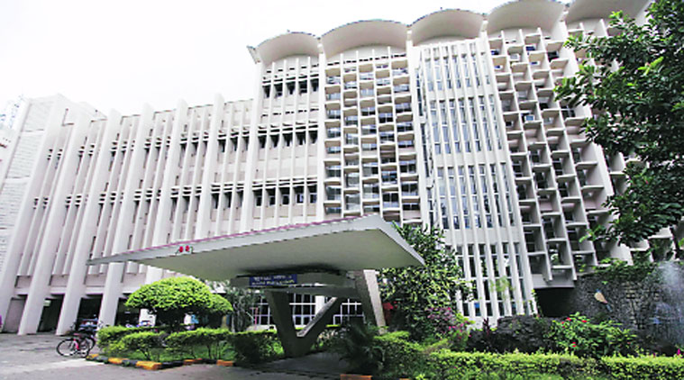
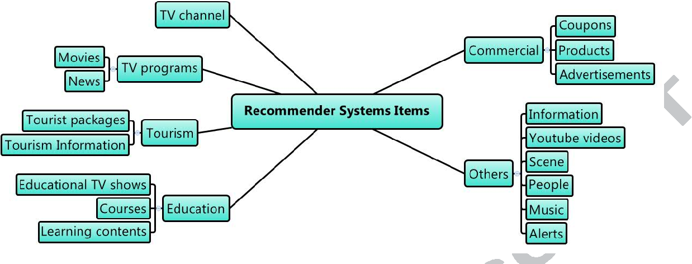

News
13 Oct 2019
Our book chapter proposal, "Deep Learning for Medical Image Segmentation," for the upcoming book, "Deep Learning Applications in Medical Imaging." at IGI Global got accepted.
4th Jan 2020
Our paper "DenseFNet: Dense Encoder-Decoder Network with Focal Loss for Salience Object Detection" draft is ready for submission at ECCV 2020
Contact Information
+65 8286 5671
live:kanchan.besu
|
Kanchan Sarkar
Senior Data Scientist
Shopee Singapore Private Limited
Master of Technology
Indian Institute of Technology, Bombay
#297-38 Bukit Batok Street 22, Singapore - 650297
• CV! • GitHub! • StackOverflow!
|
Education
| Indian Institute of Technology, Bombay Master in Computer Science and Engineering • July 2014 - June 2016 • CPI: 8.16/10 Advisor: Prof. Mythili Vutukuru |
| Indian Institute of Engineering Science and Technology, Shibpur Bachelor in Information Technology • Aug 2010 - June 2013 • CPI: 8.27/10 Advisor: Prof. Sukanta Das |
Experiences
| Senior Data Scientist, Shopee Singapore, Mar 2019 - Present • Building tools for AI-driven personalize (recommendation) auto Poster/Campaign/Banner generation to reduce the manual effort of the design team. • Building detection and segmentation model for few thousands of product types to incorporate in the image search (product discovery) on Shopee platform (Apps). • Experience in computer vision and image processing algorithms, such as image composition, segmentation, image matting, object detection, tracking, and classification. |
| Data Engineer (Data Semantics), DataWeave Bangalore, India , Jan 2017 - Dec 2018 (2 Years) • Product Matching in E-Commerce: Developed text and image based deep learning model for finding similar products across thousands of e-commerce stores containing millions of products. Text based mapping in- cludes classification of products based on their normalized attribute features. Image based mapping includes image prepossessing (background removal, object detection, upper and lower body detection) and image classification (using CNN, imagenet and inception v3). This is the most revenue generating product at Dataweave and I am leading the semantics part of this product from end-to-end. • Sentiment Analysis and Product Review Summarization: Have wide knowledge of sentiment analysis and summarization of product re- views. Developed deep learning based model for multi-document product review summarization. • Description Parsing: Working on Deep Learning model for product description parsing. In e-commerce platform description of a product is written in plain text which is the rich source of product metadata. This description is error-prone, unstructured and noisy. Building deep learning model for parsing product description to extract meaning full information and product specifications. • Attribute Tagging: Working on Deep Learning based Name Entity Recognition model for tagging different attributes of e-commerce products. Using combination of LSTM and Knowledge Graph for this purpose. |
| Member of Technical Staff , Riverbed India Pvt. Ltd (R&D Lab Bangalore), July 2016 - Jan 2017 • Experience in: C++, Python, Hyper-v, Microsoft Azure. • Job profile: Developer at SteelFusion product team. • Worked on design of virtual granite core (SteelFusion for virtual plat- form) for Hyper-V. |
| DataStage Specialist , IBM India Pvt. Ltd (IBM Global Business Service), Nov 2013 - July 2014 • Experience in: InfoSphere DataStage v8.5,IBM DB2. • Job profile: Build Datastage jobs.Cleanse and transform the data as per business logic. Designed and build shell script utility to automate the tasks for running DataStage batches. |
Projects
In the Year of 2019:| Deep Learning Based Highly Optimized Interactive Image Segmentation
This is an interactive image segmentation tools we build which is highly optimized and much better than GrabCut segmentation algorithm. The throughput is ~20 FPS which is suitable for real time production deployment. • Codes & Data |
|
 |
Optimizing Detection Model for Real-Time Deployment
Most of the SOTA object detection model are too heavy to deploy in production for real time application. We optimize the most popular one stage detector YOLOV3 for deployment on NVIDIA Jetson Nano Developer Kit. Reduces model size by 40% and throughput increased by 2X without compromizing the accuracy. • Codes & Data (comming soon) |
| Salient Object Detection
Salient object detection method which is used to segment out the most visually prominet object in an image. • Codes & Data (comming soon) |
|
| UI for Interactive Image Segmentation Using GrabCut Algorithm.
This is the first UI we build for interactive image segmentation using popular grabcut algorithm. • Codes & Data (comming soon) |
|
|  |
Master Thesis Work: Design and Analysis of Multi-Hop Network for TV White Spaces.
• Objective : Central Govt. supported project with the aim of providing broadband connectivity in rural and semi-urban areas. ◦ Designed multi-hop network for TV white space communication and evalu- ated performance metric in NS3. • Performed real experiment of designed topology on Rice WARP board inside IIT Bombay Campus. • Codes & Data • News Articles • Thesis Work |
|  |
A Facebook Profile-Based TV Recommender System.
• Objective : Building a recommendation system for TV shows based on data collected from Facebook profiles of several users. • Implemented and evaluated several algorithms in the context of developing a recommender system. • Used Matrix Factorization technique (SVD), a Clustering algorithm (K- Means), Collaborative Filtering algorithms, Latent Semantic Analysis (LSA), Link Prediction, and Na ̈ıve Bayes. • Codes & Data |
Selected Book Chapters
|
Deep Learning for Medical Image Segmentation.
- K. Sarkar., and Li, Bohang, “Deep Learning for Medical Image Segmentation”, Chapter 8 in Handbook of Research in ”Deep Learning Applications in Medical Imaging”, Jun, 2020, D. Guide, IGI Global. |
|
DEEP LEARNING BASED OBJECT DETECTION APPROACHES, IMPLEMENTATION AND USE CASES.
- K. Sarkar., and Li, Bohang, “The Application of Object Detection in Security and Privacy.”, Chapter 6 in Handbook of Research in ”Practical Applications and Use Cases of Computer Vision and Recognition Systems”, Jun, 2020, D. Guide, IGI Global. |
Technical Articles
|
Recent Trends in Natural Language Processing Using Deep Learning.
- Dec, 2017 https://medium.com/@kanchansarkar |
|
ReLU : Not a Differentiable Function: Why used in Gradient Based Optimization? and Other Generalizations of ReLU.
- Dec, 2017 https://medium.com/@kanchansarkar |
Certifications
|
Specialization in Data Mining.
- July, 2015 Coursera - Courses: Pattern Discovery in Data Mining, Text Retrieval and Search Engines, Cluster Analysis in Data Mining, Text Mining and Analytics. - Course Completion Certificate |
|
Specialization in Data Science.
- Jan, 2016 • Courses: R Programming, The Data Scientist’s Toolbox, Getting and Clean- ing Data, Exploratory Data Analysis, Reproducible Research. |
|
Specialization in Big Data.
- Feb, 2016 • Courses: Introduction to Big Data, Hadoop Platform and Application Frame- work, Introduction to Big Data Analytics |
|
Data Visualization and Communication with Tableau.
- May, 2016, Course Completion Certificate |
Honors
|
• Got GAABESU scholarship for academic achievement in 2010, 2011 and 2012 at undergraduate university. • First Prize, for best participant at Digital Forensic workshop Organized by IIT KGP in association with Chakravyuh • First Prize, in inter college coding competition at techno-management festival at undergraduate university IIEST Shibpur. • Obtained All India Rank 60 out of 1,55,190 student in GATE 2014 (99.97 percentile). |
Extra-Curriculum Activities
|
• Participated in a National Level Ethical Hacking Workshop organized by IIT Bombay Tech-
fest in association with TechDefence Pvt. Ltd. • Participated in Digital Forensic workshop Organized by IIT KGP in association with Chakravyuh. • Successfully cleared the assessment of Cognizant Certified Student Program on ”IT FOUNDATION SKILLS”. • Participated in Oracle Database 11g an oracle university training class in association with IBM and earned ”CERTIFICATE OF COMPLETION”. • Qualified for ACM-ICPC regional final held at Amritapuri, Asia. |
Teaching Assistants, IIT Bombay
| CS632 Advanced DBMS - 2014/2015 Semester 1 - Performed checking and evaluation of 100 students examination copy. |
| CS252 Computer Networks Lab.
- 2015/2016 Semester 1 and Semester 1 – Conducted lab sessions, prepared solutions of lab assignments and exam paper. – Evaluated assignments of 120 students. |
Last update: Oct 8, 2019. Webpage template borrows from Xiang Wang.